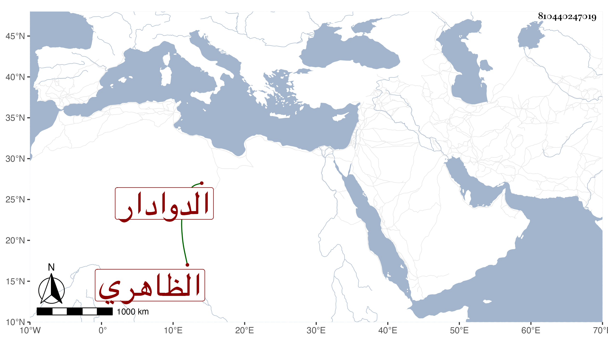

0902Sakhawi.DawLamic.ITO20230111-ara1.EIS1600.810440247019
Biography ID: 810440247019
718
قراجا الدوادار الظاهري برقوق . ترقى في أيام أستاذه ابن الناصر حتى صار أمير الطبلخاناة ثم قدمه ثم استقر به شاد الشربخاناة ثم بعد قجاجق في الدوادارية الكبرى في المحرم سنة ثلاث عشرة فلم تطل مدته وتوعك واشتد مرضه عند خروج الناصر للبلاد الشامية بحيث ركب في محفة فمات بمنزلة الصالحية في يوم الأربعاء ثالث عشر ربيع الأول منها ودفن بجامعها ، وكان شابا مليح الشكل متواضعا كريما شجاعا ، وقال العيني إنه خلف موجودا كثيرا قال : وكان قليل الخير مشتغلا بالمنكرات ولم يعرف له معروف ووهم من أرخه في ربيع الآخر .
